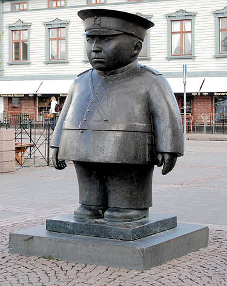

Oulu.net

Kuvassa: Toripolliisi, Kaarlo Mikkonen 1987. Valettua pronssia.
Veistos: Kaarlo Mikkonen, omistaja Oulun kaupunki. Valokuva:
Tve4
- Oma valokuva (Creative Commons)
Täälläpä ei nyt sitten muuta sisältöä olekaan.